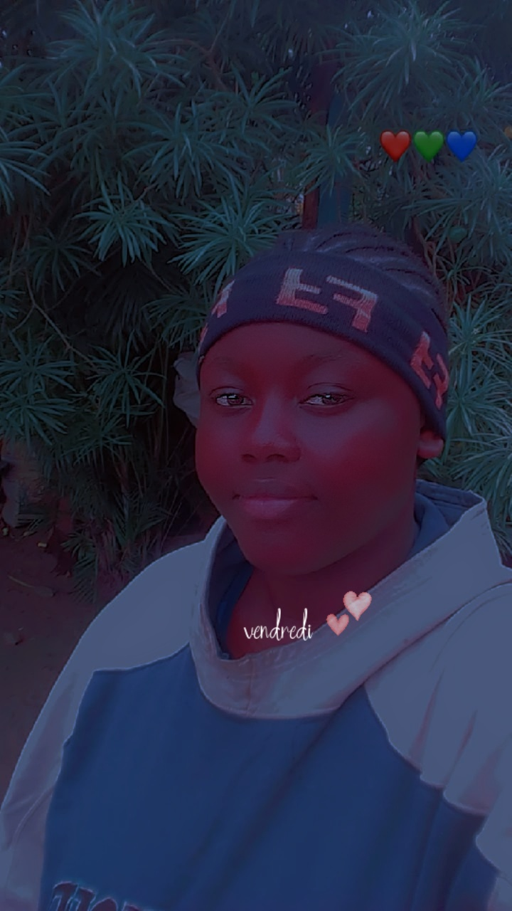

À propos de moi

Qui suis-je ?
Je m'appelle Victoria Bibila et je suis étudiante en informatique. J'aime comprendre comment fonctionnent les applications et concevoir des sites web propres et bien structurés.
Mon parcours académique
Actuellement en 2e année de Licence Informatique à ECES, j'acquiers des bases solides en programmation, algorithmique, bases de données et intégration web (HTML5/CSS3).
Mes aspirations professionnelles
Mon objectif est de continuer à progresser dans le développement logiciel et web, de réaliser des projets concrets et d'intégrer une équipe dynamique pour un stage ou une collaboration technique.